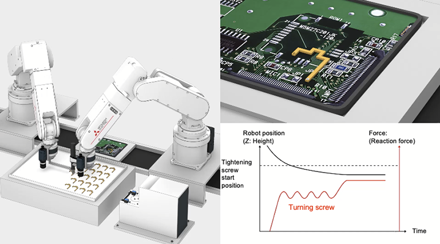
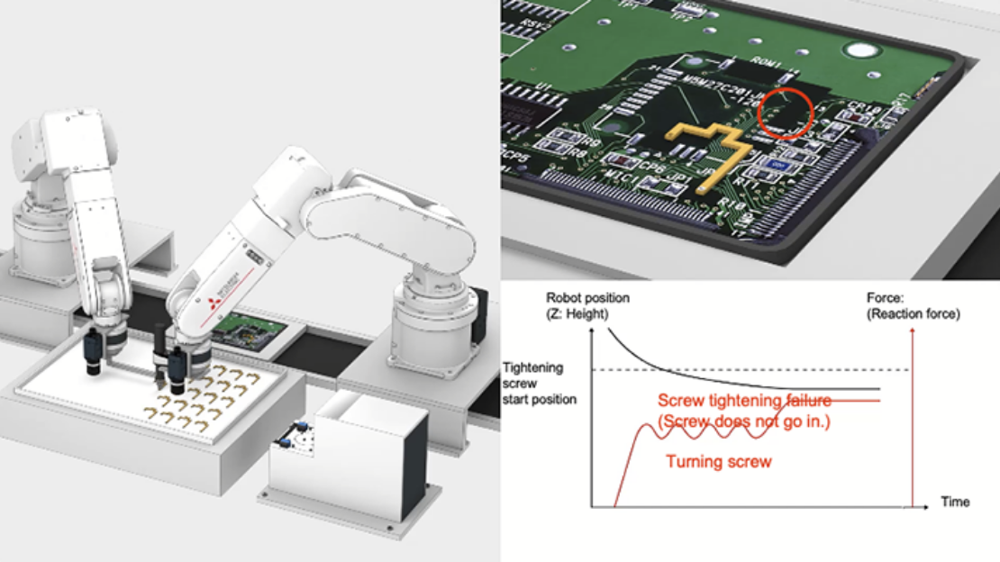

Solusi
Elektrikal & Elektronik
Pengencangan sekrup presisi
Dua robot bekerja sama untuk mentransfer benda kerja fleksibel (FPC: sirkuit cetak fleksibel) dan mengencangkan sekrup. Sensor gaya digunakan untuk mendeteksi pergeseran posisi dan kelainan untuk mencegah kerusakan.
Contoh Pengencangan sekrup presisi
Solusi untuk Masalah
Masalah
Semakin banyak robot dengan fleksibilitas lebih besar digunakan dalam proses pengencangan sekrup, yang sering menjadi bagian dari proses manufaktur di industri listrik/elektronik. Pertimbangan juga meningkat untuk otomatisasi operasi kompleks menggunakan beberapa robot.
Solusi
- Dua robot bekerja sama untuk mentransfer FPC (sirkuit cetak fleksibel).
- Robot mengeluarkan sekrup dari mesin penyedia sekrup.
- Sensor penglihatan memeriksa posisi benda kerja.
- Robot menghitung posisi kerja secara internal menggunakan metode perhitungan vektor dan memindahkan ujung obeng dekat ke posisi yang dikompensasi.
- Sensor gaya mendeteksi kesalahan posisi dan mengontrol gaya penekanan selama pengencangan sekrup.
- Obeng listrik yang dipasang di dekat ujung/flensa robot mengencangkan sekrup.
- Interferensi antara beberapa robot atau dengan peralatan sekitarnya secara otomatis dihindari sepanjang proses di atas.
Point
- 【Pencegahan co-rotasi】
- Pengencangan sekrup dilakukan sambil mempertahankan posisi benda kerja ringan.
- 【Operasi sudut didukung】
- Pengencangan sekrup dari berbagai sudut didukung oleh kebebasan robot 6-sumbu.
- 【Gerakan yang disinkronkan dengan penyisipan sekrup】
- Kontrol gaya digunakan untuk mempertahankan gaya penekanan konstan bahkan saat mengencangkan sekrup.
- 【Transfer material fleksibel】
- Benda kerja fleksibel ringan (FPC, dll.) ditransfer dan diposisikan oleh beberapa robot.
- 【Penghindaran interferensi】
- Penghindaran interferensi tanpa program dicapai melalui pemantauan real-time.
- 【Perlindungan produk/lubang sekrup presisi】
- Sensor gaya mendeteksi kelainan dan menghentikan gerakan untuk mencegah kerusakan produk.
Ketika suatu kelainan terjadi karena pergeseran posisi
Pergeseran posisi lubang yang disebabkan oleh benda kerja yang rusak.
Sensor gaya mendeteksi kelainan dan mencegah sekrup dikencangkan di posisi yang salah, melindungi produk.